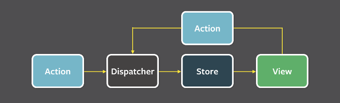

# 前言
最近在实习做项目的时候，使用的是 react，发现项目的数据管理使用的架构是 flux。虽然我很久之前也看过一下 flux 的架构思想，不过过了这么久又没有应用，早就忘光了，趁着这次机会，再来复习一下，顺便也记录下以前对 redux 的结构的思考。
# Flux 是什么？
flux 是一种架构思想。在 flux 里，一个应用分为四个部分，分别是：
View:视图层 | |
Action：动作，视图层发送的信息，比如用户点击了某个按钮。 | |
Dispatcher：发布者、派发器，用来接收action并执行回调函数。 | |
Store：数据层，用来存放应用的状态，一旦发生变动，就提醒Views要更新页面 |

看到这个图，很明显，Flux 的特点是数据的单项流动。
# View（视图）
视图是用来展现数据的，当视图上某些事件发生的时候，他就会调用一个方法，向 Dispatcher 发出一个 Action，告诉他是什么类型的变化。
# Action
每一个 Action 都是一个对象，它通常包含动作的类型、数据属性。
# Dispatcher
它的作用是将 Action 派发到 Store 中。
# Store
它保存着整个应用的状态，所有数据都存放在那里
一般来说，View 从 Store 处获得数据并渲染，用户从 View 进行操作、触发一个 Action 发送到 Dispatcher 中进行相应的更改计算，再更改 Store，并且将这个变化 “告知” View，再重新渲染，大概是这么一个过程。
# Redux
Redux 是 2015 年出现的，它将 Flux 和函数式编程相结合。
# 应用场景
用户使用方式复杂、不同身份用户有不同的使用方式（比如普通用户和管理员），或者使用了 websocket。
它是为了解决 react 中组件通信问题的。
# 设计思想
Redux 的设计思想其实很简单，两句话就能总结下来
应用是一个状态的集合，状态和视图一一对应
所有的状态保存在一个对象里面
# Redux 的基本概念
# Store
保存数据的地方，整个应用只有一个
使用 createStore 生成
import {createStore} form 'redux'; | |
const store = createStore(fn);// 参数为一个函数（这个函数为 Reducer），返回值为一个 store 对象 |
# State
store 对象包含所有数据，Store 的快照 —— 某个时点的数据，就叫做 State
通过 store.getState () 获取
一个 State 对应一个 View。
# Action
State 改变时，View 会发出一个通知 —— 就是 Action
# Action Creator
用于批量生成 Action
# Store.dispatch()
View 发出 Action 的唯一方法
该方法参数为一个对象或一个 Action Creator
它其实做了两件事，将传入的 action 传递给 reducer 方法，计算出新的 state、并逐一执行订阅了 store 的函数。
# Reducer
计算新 State 的过程 ——Reducer，一个函数，参数为 Action 与当前 State，返回一个新 State。
store.dispatch 会触发 reducer 的自动执行。该函数在生成 store 的时候传入 createStore 方法。
它是一个纯函数，不得改写参数，同样的输入必定得到同样的输出
# store.subscribe()
store 允许使用 store.subscribe 方法设置监听函数，一旦 State 发生变化，就自动执行该函数。
参数为一个函数（View 的更新函数，一般对于 react 项目就是组件的 render 或者 setState 方法）
Store.subscribe 方法返回一个函数，调用这个返回的函数可以解除监听
# Store 的实现
const createStore = (reducer) =>{ | |
let state;// 某一时刻数据的状态 | |
let listeners = [];// 监听数据者 | |
const getState = () => state; | |
const dispatch = (action) => { | |
state = reducer(state,action); | |
listeners.forEach(listener => listener());// 一个个执行更新函数 | |
}; | |
const subscribe = (listener) => { | |
listeners.push(listener); | |
return () => { | |
listeners = listeners.filter(l => l!==listener);// 执行函数将监听者数组去除这个 listener | |
} | |
}; | |
dispatch({});// 第一次先初始化一下 | |
return { getState, dispatch, subscribe }; | |
}; |
# Redux 工作流程的梳理总结
- 先通过 createStore (fn) 生成一个 store。fn 为 reducer，通过 action 和 state 计算新的 state
- 通过 getState（）获取 Store 某一时刻的 State
- 通过 State 渲染 View，一个 state 对应一个 view
- View 通过 store.dispatch 来发出一个 action（通知更新 store）
- 更新后循环 234